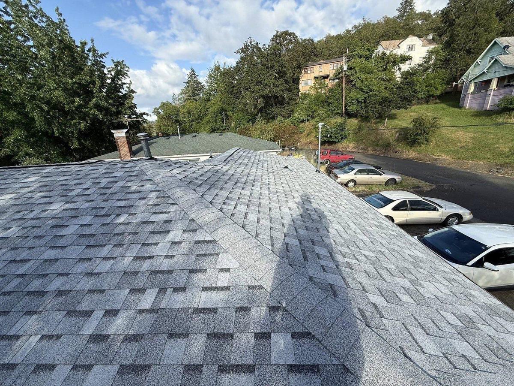
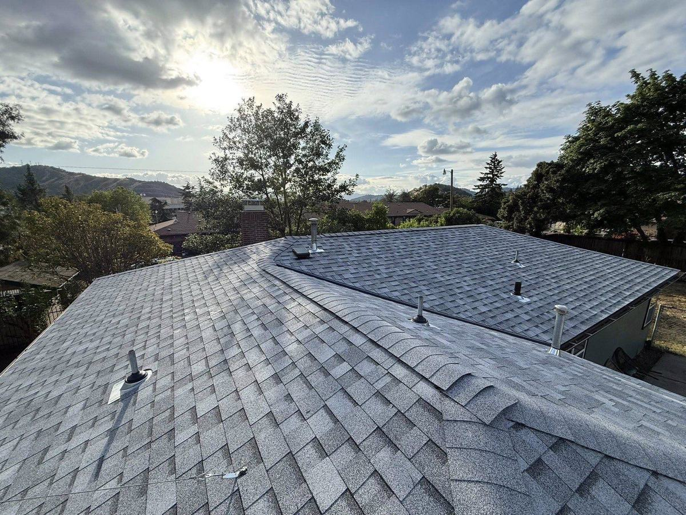

Roofing & Home Care · Douglas County, Oregon
Sleep better when it rains.
Mistletoe Construction is a family-owned roofing and construction company in the Umpqua Valley. We replace, repair, and care for roofs across Roseburg, Riddle, Myrtle Creek, and every corner of Douglas County — and our Home Care Membership watches your home year-round from $49/month.
Oregon CCB #255729 · Licensed & insured Owens Corning contractor Family-owned in Riddle, OR
What We Do
From the ridge cap to the fence line, we handle it.
Roofing is our craft — and as a licensed general contractor, we care for the whole home. Every job gets quality materials, honest communication, and work that outlasts the rain.
Roof Replacement
When repairs aren't enough, we tear off and rebuild it right — Owens Corning architectural shingles, ice-and-water shield, and a roof built for 130 rainy days a year.
Replacement details → RoofingRoof Repair
Missing shingles, storm damage, stubborn leaks. We find the real source, fix it fast, and show you photos of everything we did.
Repair details → RoofingRoof Cleaning & Moss Removal
Moss is the Umpqua Valley's quiet roof killer. We remove it safely — never pressure washing — and keep it from coming back.
Moss removal details → ExteriorSiding
Professional siding installation and replacement that protects your home from sideways Oregon rain and looks sharp doing it.
Siding details → ExteriorGutters & Gutter Guards
Clogged gutters rot fascia and flood foundations. We clean, repair, and install guards so water goes where it should.
Gutter details → Whole HomeGeneral Contracting
Decks, fences, flooring, remodels, and more — one licensed local contractor for the projects on your list.
Contracting details →Home Care Membership
Protect your home before small problems become expensive ones.
Most roof disasters start as a $200 problem nobody saw. Members get scheduled inspections before every rainy season, priority service when storms hit, and maintenance included — for one affordable monthly payment.
- Annual roof & gutter inspection, timed before the rain
- Seasonal debris checks after storms
- Front-of-line priority scheduling for repairs
- 10% off any repair work, photo report after every visit
- Emergency tarping included — up to 100 sq ft of storm damage, per incident
Essential
$49/month
Year-round peace of mind for your roof and gutters. No long-term contracts — cancel anytime.
Join Essential See everything included →
About Mistletoe
Honest roofing, built on community values.
Mistletoe Construction is a family-owned company founded by local expert Alex Smith. We live and work in the same Douglas County communities we serve — so when we say we treat your roof like our own, we mean the roof down the street from ours.
From a single missing shingle to a full replacement, we bring honesty, reliability, and craftsmanship that stands the test of time — and the rain.
“We treat every Oregon roof like it's our own home. Quality craftsmanship, honest communication, and results that last — that's the whole job.”
Our Work
Real Oregon roofs, done right.



Where We Work
Proudly serving the whole Umpqua Valley.
Based in Riddle — minutes from I-5 — we cover every town in Douglas County. Find your town for local details, common roof issues in your area, and recent work nearby.
Roseburg
Roofing & construction in Douglas County's hub.
→Riddle
Our hometown. We're your neighbors.
→Myrtle Creek
Ten minutes from our shop.
→Winston
Roof care in the banana belt.
→Sutherlin
North county coverage.
→Canyonville
South county, canyon weather.
→Green
Fast response off Highway 99.
→Glide & North Umpqua
Forest edge roofing specialists.
→Guides & Resources
Straight answers for Oregon homeowners.
No sales fluff — just the stuff we'd tell a neighbor over the fence. What things cost, what the county requires, and how to make a roof last in this climate.
What a Roof Replacement Really Costs in Roseburg
Real local price ranges, what drives them up or down, and how to compare bids.
Read the guide → MaintenanceMoss on Your Roof: Remove It, Keep It Off
Why the Umpqua Valley grows moss so well, and the safe way to deal with it.
Read the guide → Safety & InsuranceWildfire-Resistant Roofing in Douglas County
Class A roofs, Oregon's rules, and how the right roof can help your insurance.
Read the guide →Questions
Asked by our neighbors, answered honestly.
What areas does Mistletoe Construction serve?
We're based in Riddle, Oregon and serve all of Douglas County — Roseburg, Myrtle Creek, Canyonville, Winston, Green, Sutherlin, Oakland, Glide, Camas Valley, and everywhere between. If you're in the Umpqua Valley, we'll come take a look.
Are you licensed and insured in Oregon?
Yes. Mistletoe Construction LLC is a licensed Oregon contractor, CCB #255729, and a proud Owens Corning contractor. You can verify any Oregon contractor's license in about two minutes — here's how.
How much is the Home Care Membership, and what do I get?
Plans start at $49/month. Essential includes an annual roof & gutter inspection, seasonal debris checks, priority scheduling, 10% off repairs, photo reports, and emergency tarping for up to 100 sq ft of storm damage — included, per incident. No long-term contracts. Full details here.
Do you offer free estimates?
Always — free and no-pressure. Call or text (541) 670-5005 or use the contact form; we typically reply within one business day.
Why does everyone's roof grow moss around here?
Roseburg sees around 130+ rainy days a year, and shaded shingles never fully dry out between October and May — perfect moss habitat. Moss lifts shingles and traps water against your roof deck. We remove it safely (never pressure washing) and prevent regrowth with zinc treatment and scheduled maintenance. The full moss guide explains everything.
Ready to protect your home? Let's talk.
Free, no-pressure estimates from a local team that treats your home like our own.